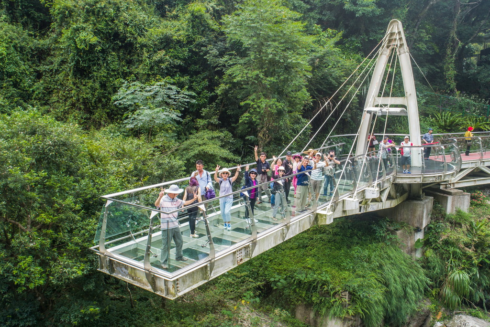

景點介紹-小烏來
想要一口氣玩遍風景區內練膽景點，就得走訪「水岸綠廊步道」，步道就位在小烏來的宇內溪旁，整條步道沿著溪畔而建，一路上有著潺潺水聲伴行，再加上一旁溪谷捎來的涼風，讓人走來格外舒爽。沿途除了可以欣賞水岸風光，更以無障礙空間的平緩木坡道串連風景區內「風動石」與「天空步道」等知名景點，其中「風動石」日前雖然不敵風災的襲擊而倒下，卻沒有被大水所沖走，巨大的身形仍是遊客目光焦點；而知名的「天空步道」地處小烏來瀑布上方，以距離瀑布底70公尺高的強化玻璃橋面，透明延伸至小烏來瀑布的源頭，腳下湍流不息的瀑布清楚可見，挑戰民眾的膽量之餘，也實現了漫步在雲端的夢想。
